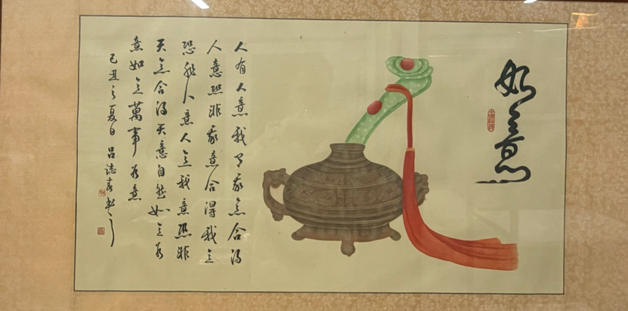
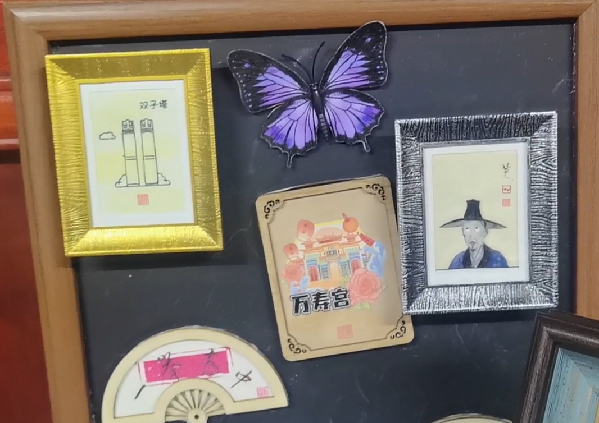
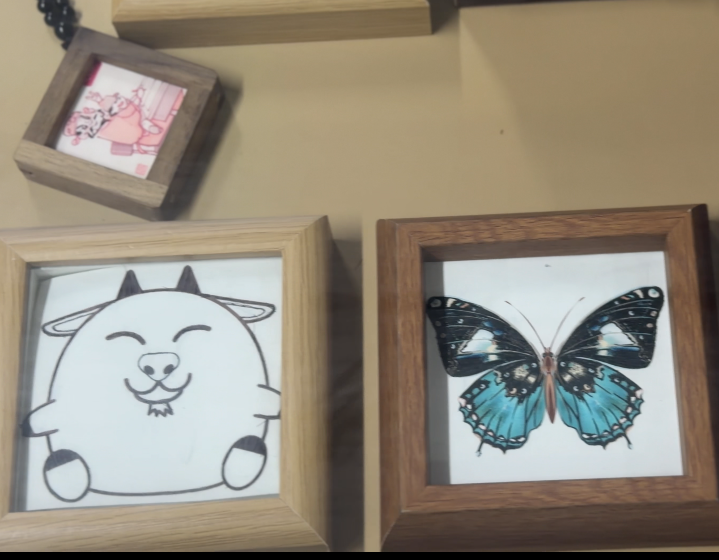
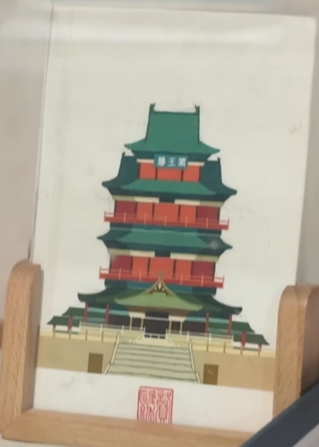
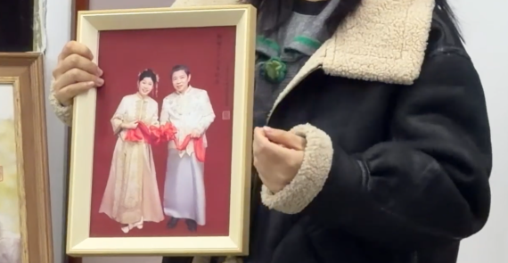

生活场景
从传统艺术品走进现代生活，成为人们日常生活中的文化点缀，为现代生活增添了独特的艺术气息和文化底蕴。

家居装饰
将赣发绣作品作为家居装饰，为现代家居增添文化底蕴和艺术气息。

文创产品
开发赣发绣文创产品，让传统工艺走进日常生活，焕发新的生命力。

旅游纪念品
将赣发绣作为江西特色旅游纪念品，推广地方文化，促进文旅融合。
个性化定制
提供个性化赣发绣定制服务，满足现代人们对独特艺术品的需求。

传统工艺
传承赣发绣传统工艺，保持其独特的艺术价值和文化内涵。

现代设计
融合现代设计理念，为赣发绣注入新的创意和时尚元素。

创新应用
探索赣发绣在现代社会的创新应用，拓展其艺术表现力和市场空间。
家居装饰
文创产品
旅游纪念品
个性化定制
传统工艺
现代设计
创新应用